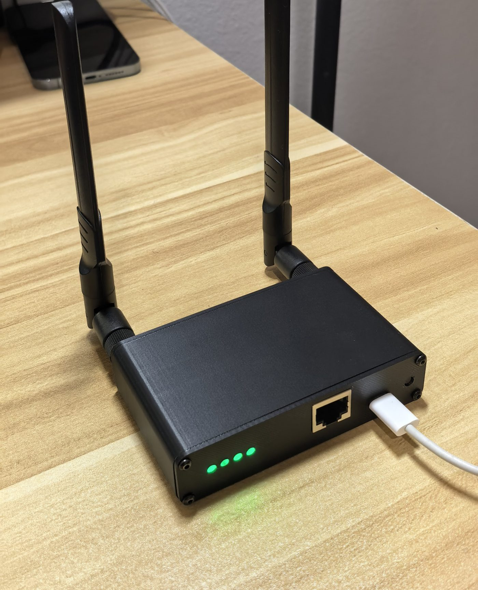
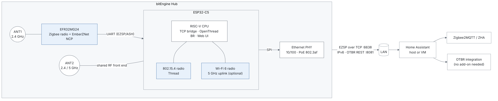

Zigbee and Thread, both on, in one PoE box.
bitEngine Hub puts a Zigbee coordinator and a Thread border router on two separate radios, running at the same time. One Ethernet cable for power and data. Runs locally, no cloud required.
Open firmware (Apache-2.0) and open schematics (CERN-OHL-P v2).

Two networks transmitting at once, on their own channels
A single-radio coordinator makes you pick Zigbee or Thread, or time-share one radio with multiprotocol firmware. The Hub has two radios and two antennas, so each network keeps its own channel all the time.
How it shows up in Home Assistant
It behaves like two standard devices in one enclosure. Nothing proprietary to install.
Zigbee: a network coordinator
Add it to ZHA as an EZSP network adapter. Zigbee2MQTT with the ember driver uses the same port, tested with Zigbee2MQTT 2.14.2.
socket://<hub-address>:6638
Thread: a border router on the device
OpenThread Border Router runs on the Hub itself. Add it with Home Assistant's Open Thread Border Router integration; the OTBR add-on isn't needed.
http://<hub-address>:8081


Or skip Home Assistant and talk to it through Muse
Home Assistant is the main way to use the Hub. On a separate, experimental firmware build, the Hub connects straight to Muse, Meta's AI agent, using the Muse Gadget SDK. You ask Muse in plain language to control your devices, and motion and door events show up in your Muse chat as they happen. There's no Home Assistant and no bitEngine cloud in between.
What Muse can do
- List devices, read their state, switch them on and off, and dim lights
- Rename devices and assign rooms
- Open the Zigbee join window and commission a Matter device
- Receive motion and door events from the devices you opt in, as they happen
Measured on one prototype board
| Sensor report at the Hub → accepted by Muse's server | median 0.24 s, worst 1.1 s (25 events overnight, none lost) |
|---|---|
| Matter plug command → plug confirms | about 90 ms |
| Continuous run | 21.5 h, no reboot, no heap growth |
| Server-side connection drops | about once an hour; reconnected in 3–21 s each time |
Devices on it now
- Zigbee: Sengled bulb, Third Reality motion sensor, Aqara temperature and humidity sensor
- Matter over Thread: Aqara P2 door sensor, Eve Energy plug
Know before you try it
- Muse is a cloud service, so in this mode device events go to Muse's servers. The Home Assistant mode stays local.
- This build is Ethernet only. Wi-Fi is left out to free memory for TLS, Thread, Matter and Zigbee.
- It's an unofficial integration, not affiliated with or endorsed by Meta.

How it compares
Dual-radio network coordinators already exist, such as SMLIGHT's MR series. The Hub makes a few different choices:
- Thread is native on the second chip. The ESP32-C5 has its own 802.15.4 radio, so Thread doesn't need a separate radio co-processor.
- OTBR is the only Thread mode. The border router always runs on the device and Home Assistant talks to it over the REST API. There's no mode to switch and no add-on to install.
- Wi-Fi uplink is 5 GHz only. 2.4 GHz Wi-Fi stays off, leaving that band to Zigbee and Thread.
- Open firmware and schematics. See what will be published below.
What you'll be able to read, build and modify
A coordinator sits at the centre of your home network, so you should be able to see exactly what it runs and how it's wired. Everything below will be published before any units reach testers.
| Part | What's published | License |
|---|---|---|
| Hub firmware (ESP32-C5) | Full source: TCP bridge, OpenThread border router integration, web UI | Apache-2.0 |
| Zigbee firmware (EFR32MG24) | Project configuration, our extensions and build scripts. The build pulls the EmberZNet SDK from Silicon Labs, which can't be redistributed. | Apache-2.0 |
| Hardware | Schematics as PDF | CERN-OHL-P v2 |
Repositories, with the architecture, the release scope and the roadmap, are on GitHub: bitengine-hub-firmware, bitengine-hub-zigbee-ncp and bitengine-hub-hardware (github.com/bitEngineTech).
Official firmware images will be signed so the radios stay within their certified limits.
Hardware
| Zigbee | EFR32MG24, EmberZNet 8.2 NCP |
|---|---|
| Thread and Wi-Fi | ESP32-C5: 802.15.4 and dual-band Wi-Fi 6 |
| Uplink | 10/100 Ethernet, or 5 GHz Wi-Fi |
| Power | 802.3af PoE or USB-C 5 V |
| Antennas | Two external SMA, one per radio |
| Status lights | Four RGB LEDs: system, Zigbee, Thread, network |
| Enclosure | Aluminium extrusion (production) |
Trade-offs to know
- Ethernet is the recommended uplink. 2.4 GHz Wi-Fi is turned off to keep that band clear for Zigbee and Thread. The 5 GHz Wi-Fi uplink shares the C5's radio with Thread, so a wire is the more reliable choice.
- Both networks start from the same spot. If your home needs the Zigbee coordinator and the Thread border router in different rooms, two separate devices are the better fit.
- Not certified yet. FCC and CE testing is being planned for the production hardware.
Where it stands
- Hardware and firmware working on a home network
Running ZHA and Matter-over-Thread devices continuously.
- Zigbee2MQTT (ember) tested
Pairing, reporting and control on Zigbee2MQTT 2.14.2, picking up the existing ZHA network without forming a new one.
- Long-term stability testing
Current Home Assistant releases, migration from other coordinators, larger device counts and longer uptime. The bar is a coordinator you can forget about.
- Direct link to Muse (experimental)
Working on one prototype board with Zigbee and Matter-over-Thread devices. See the Muse section.
- Open-source release
Hub firmware under Apache-2.0 with build configuration for the MG24 image, and schematics (PDF) under CERN-OHL-P v2. Published before any units reach testers.
- FCC and CE certification
On the production board revision.
- Small tester run
A limited number of units for homes with larger Zigbee or mixed Thread networks.
Follow the build
Test results, the open-source release and news about tester units. A few emails at most; unsubscribe any time.